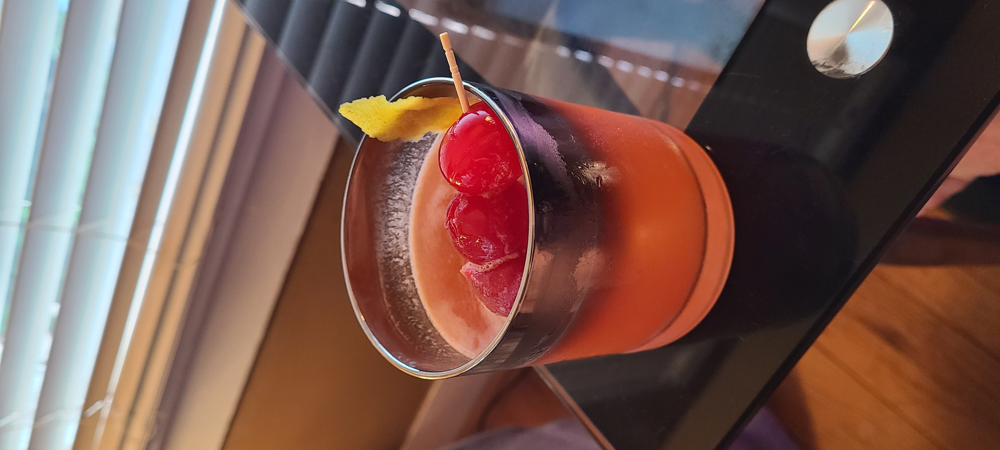

Hunny's Whiskey Sour

Delightfully tart, this whiskey sour is a lot more sour than sweet!
This is John's secret formula, adapted from Difford's Guide.
This is one of those recipes where all the little details matter.. if at all possible, follow the recipe to the letter!
Ingredients
- 2 Parts Whiskey
- 1 Part Lemon Juice
- Sweetener (see notes)
- Angostura Bitters
- Cherries (for garnish)
- Lemon Peel (for shaking & garnish: see notes)
Steps
- Add whiskey, lemon juice, and a good 4-5 shakes of bitters per drink to the glass part of a boston shaker, then stir everything until sweetener is fully dissolved. Note: don't add ice until after this step is complete, or else the sweetener will not fully incorporate.
- Add chunks of lemon peel to the mixture, then add lots of ice to the other part of the shaker.
- Pour the drink mixture over the ice, seal the shaker tightly, then shake for a long time, "until your arms hurt."
- Pour over ice in glasses and garnish with 1-3 cherries and a good-sized chunk of lemon peel. For an extra kick of lemon, rub the peel garnish around the rim before adding to the drink!
Notes
- Regardless of what kind of sweetener you use, adjust to taste. We like our Sours really nice and sour, but if you like your drinks on the sweet side, add more! For reference, we use 1 large sugar cube per drink, which would probably equate to roughly 1 tsp in liquid form.
- The sweetener you use can be anything; John has used sugar syrup, honey, and agave. His favorite now is a brown sugar cube he found at Fresh Market, but they are on Amazon here!
- For the lemon peel in the shaker and garnish, the best method is to pick a large lemon, then peel big strips off of it from end to end. Any messy strips or smaller chunks go into the shaker in step 2, then you save any large, intact strips for the garnish! Do this before juicing the lemons so that you can cut and use juice from this lemon for the drink, otherwise it will dry out quickly without its peel.